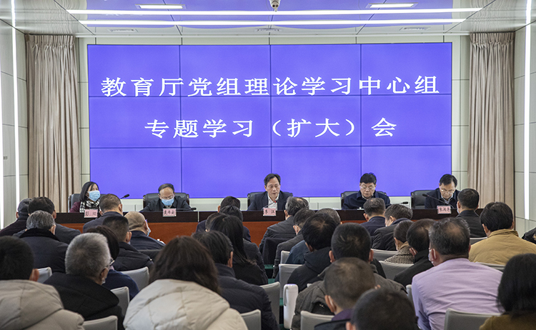
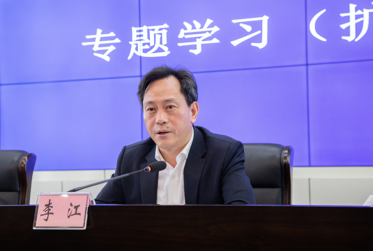

机构
机构 新闻
新闻 信息公开
信息公开 服务
服务 互动
互动 办公系统
办公系统准确把握核心要义 加快建设教育强省

12月31日，教育厅组织党组理论学习中心组专题学习，深入学习党的十九届五中全会和省委十一届八次全会精神，总结梳理“十三五”以来教育改革发展成就，谋划布局“十四五”时期发展目标。会议强调，学习好宣传好贯彻好党的十九届五中全会精神、省委十一届八次全会精神，以及中央和省委经济工作会议精神，是当前和今后一个时期全省教育系统的首要政治任务，全省教育系统要立足新发展阶段、践行新发展理念、构建新发展格局，抢抓长江经济带教育示范区建设、成渝地区双城经济圈建设、“一带一路”发展的重大战略机遇，科学谋划“十四五”时期教育高质量发展，为全面建设社会主义现代化国家贡献教育力量。省委教育工委书记，教育厅党组书记、厅长李江作讲话。

会议指出，“十三五”以来，全省教育系统深入学习习近平新时代中国特色社会主义思想，坚决贯彻落实习近平总书记关于教育的重要论述和省委省政府对教育工作的最新要求，注重用“新思想”导航，用“新理论”铸魂，用“新作为”励志，用“新风尚”育人，既紧紧抓住省委省政府最关注、人民群众最关心、社会各界最关切的现实问题，在幼有所育、学有所教、弱有所扶上不断取得新进展，又立足国情省情合理引导社会预期。特别是在今年新冠肺炎疫情防控阻击战中，主动扛起政治责任，引领全省教育系统坚决贯彻中央和省委省政府关于统筹推进疫情防控与经济社会发展的决策部署，切实打好疫情防控阻击战、平安校园保卫战，及时为最美逆行者排忧解难，在大疫中践行初心使命，在大考中彰显责任担当。
会议指出，在疫情防控阻击战中，全省教育系统始终聚焦立德树人根本任务，坚决扛起为党育人、为国育才政治责任，着力保障教育发展、推动教育改革、促进教育公平、丰富教育内涵、提高教育质量，注重把疫情危机转化为教育契机，用好实践教材，讲好抗疫故事，使之进教材、进课堂、进头脑、进心灵，激发了师生爱党爱国热情。在脱贫攻坚战中，始终聚焦义务教育有保障突出问题，坚决夺取交账之年、收官之战全面胜利，全力督战参战、输血造血、扶贫扶智，贫困县（市、区）教育脱贫工作全部通过省检，建档立卡贫困家庭学生全部实现“应读尽读”。始终坚持补短板、强弱项、提质量、抓示范、促改革、见实效，在促进教育公平、加快构建优质均衡基础教育服务体系上持续用力；在深化职业教育改革发展、推进技能型人才培养上探索新路；在优化高等教育布局结构、提升教育对区域经济发展的支撑上守正创新；在规范社会与民办教育秩序、构建竞争有序充满活力上推陈出新；在深化综合改革、打造重大试验示范区上气象更新；在围绕中心、服务大局上更加主动；在面向基层、服务地方的意识上更加自觉；“党建引领、教育鼎兴”各项工作取得新成效实现新作为再上新台阶，努力向党和人民交出了满意答卷。
会议强调，立足新发展阶段，站位还需再提高。教育作为国之大计、党之大计，生逢盛世更要躬自入局，挺身而出更要挺膺负责。中央和省委对教育的要求，就是四川教育的奋进坐标；群众和社会对教育的期盼，就是四川教育人的奋斗目标。要解国家之所急，在强国大业中明晰方位，在复兴伟业中找准定位，切实解决教育驱动不强、服务不足、支撑不久等问题。要应省情之所需，四川发展需要什么人才教育就培养什么人才；四川发展需要什么支撑教育就提供什么支撑，抢抓机遇、抢先一步，让四川教育更好服务全省工作大局；要顺人民之所意，准确把握主要矛盾变化，聚焦群众急难愁盼问题，围绕“主题”、贯穿“主线”、突出“主旨”，切实转变发展方式，构建高质量教育体系，顺应人民群众对优质公平教育的新期待。
会议强调，贯彻新发展理念，思想还需再解放。面向“十四五”，要解放思想、转换思维，不断探寻“何为教育、教育何为”，以新理念引领新发展，以新举措推动高质量。要“三律互动”拓思路，坚持按教育规律全面落实立德树人，坚持按经济规律规划布局建设学校，坚持按市场规律加快推进职业教育，让教育规律、经济规律、市场规律良性互动、相得益彰。要“四轮驱动”谋出路，进一步明确基础教育、职业教育、高等教育、社会与民办教育是什么、干什么、怎么干等核心问题，突出解决“上好学”“就好业”“争一流”“抓规范”，按照“稳中求进、对标竞进、开局快进”的工作总基调，谋划重点、攻克难点、打造亮点，在构建高质量教育体系中积极作为、奋勇争先。要“五化联动”开新路，做到项目支撑实体化、政策制定精准化、经费使用科学化、管理治理信息化、教育服务高效化。
会议要求，融入新发展格局，事业还需再跨越。构建“双循环”新发展格局作为事关全局的系统性深层次变革，不是目前的权宜之计而是未来的大势所趋，不是短期的战术调整而是长期的战略考量。四川教育要在新时代大潮中登高望远、防微虑远，在新战略支点中精准定位、准确入位，在新发展格局中提升位势、积厚成势。要从战略着眼，抓住成渝地区双城经济圈建设，围绕建设高能级创新平台、推进西部（成都）科学城和中国（绵阳）科技城、组建天府实验室等战略重点，谋划标志性引领性支撑性教育项目；抓住新时代振兴中西部高等教育的重大机遇，加快“双一流”建设，巩固提升我省中西部教育高地优势；抓住长江教育创新带优先布局，以“产学研用”创新合作体建设为纽带，打造长江上游教育增长极和创新动力源。要从改革着力，跳出教育看教育、跳出教育办教育，把激发创新创业创造活力摆在改革的突出位置，把激活教育投资消费内需作为改革的重要内容，以“学教研产城”一体化试验为载体，以“产教城融合创新行动”为抓手，整合各方资源，搭建创新平台，借力借势借智，努力走出一条“始于学、融于教、立于研、兴于产、聚于城”的具有四川特色的改革创新之路，切实让教育创新强起来，让教育消费活起来。要从干部着手，按照“行家里手”的定位从严要求自己、加快提升自己，练好“看家本领”、练就“几把刷子”，以过硬的专业思维专业素养专业能力服务新发展格局。
会议还对岁末年初教育重点工作进行了部署。会议要求，全省教育系统党员干部要起而行之、勇挑重担，围绕中心不偏向，服务大局不游离，乘势谋局站高一点、借势格局靠前一点、顺势开局想深一点、蓄势布局看远一点、强势破局压实一点，重整行装再出发，厉兵秣马再奋进，奋力开启全面建设现代化教育强省新征程，以优异成绩迎接中国共产党成立100周年。
会上，省委教育工委副书记，教育厅党组成员、副厅长崔昌宏；省委教育工委委员，教育厅党组成员、副厅长戴作安、张澜涛；教育厅副厅长彭翊分别围绕基础教育、职业教育、高等教育、社会与民办教育“四轮驱动”谈认识体会和“十四五”规划打算。
教育厅党组成员，机关全体干部和直属单位负责同志参加专题学习会。
（倪秀 董志文）